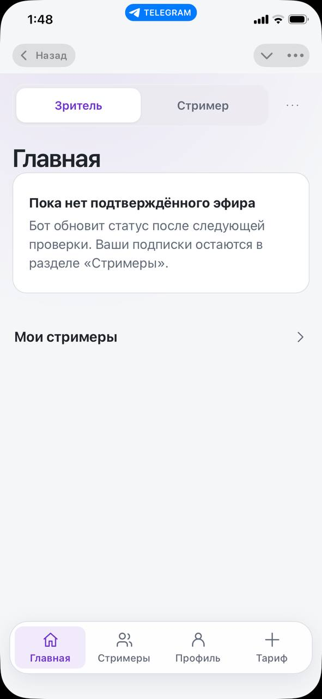
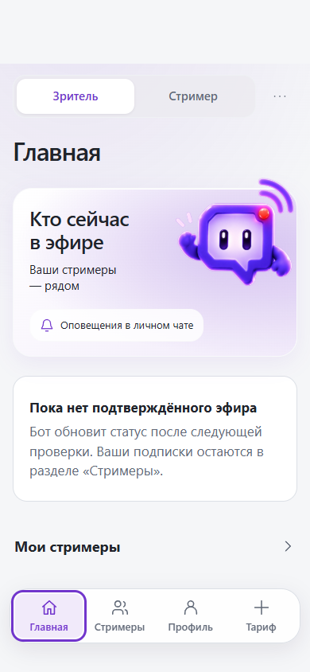
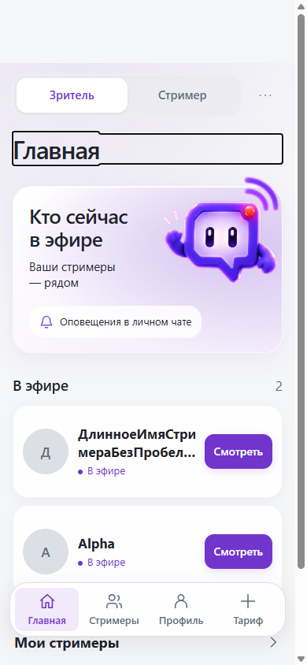
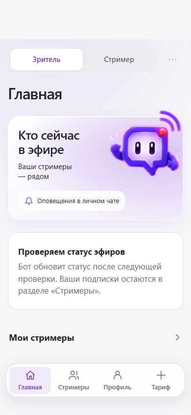
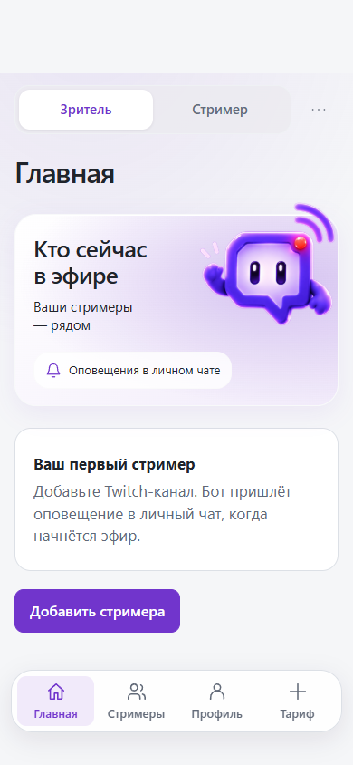

Исправление опубликовано на @TwitchSignalTestbot. Закрой старое окно Mini App и открой «Приложение» заново. Проверка жестов на настоящем телефоне ожидается.
Один экран — разные состояния
Раньше персонаж появлялся только при активных эфирах. На присланном скриншоте подписки есть, но подтверждённых эфиров нет — поэтому верхний блок исчез. Сравнение с заполненным списком не показывало эту ошибку.
Справа — исправленные компоненты на локальных тестовых данных. Верхний блок теперь сохраняется независимо от статуса эфиров. Новая выкладка и проверка на телефоне отмечаются отдельно в статусе исправления.
Твой экранНастоящий iPhone, подписки без эфиров
Что я показывал раньшеДругие данные: есть активные эфиры Исправление для твоего состоянияПодписки есть, эфиров нет; локальная проверка
Исправление для твоего состоянияПодписки есть, эфиров нет; локальная проверка
Проверены все четыре состояния
Есть эфиры
Эфиров нет
Статус уточняется
Первая подписка
Системные кнопки Telegram есть только на твоём снимке. Браузерные изображения показывают компоненты приложения и не заменяют проверку на устройстве.